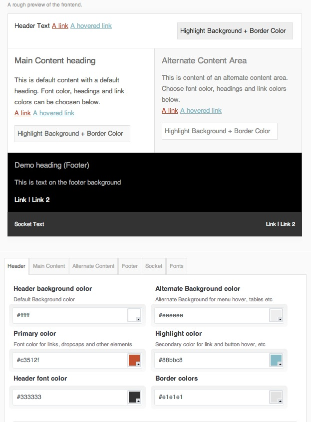
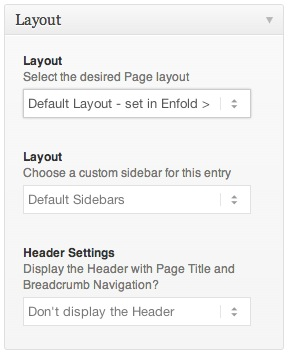
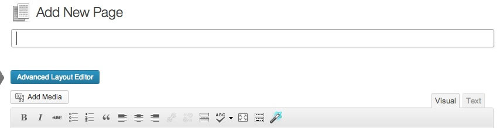
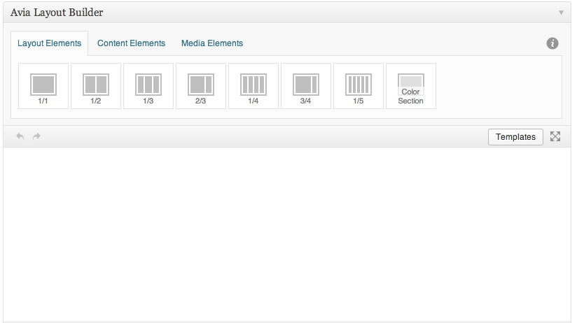

“Enfold WordPress Theme” Documentation by “Kriesi” v1.0
“Enfold WordPress Theme”
Created: 2013/04/12
By: Christian "Kriesi" Budschedl
Email: Kriesi
Informations about Updates and New Themes are always announced on Twitter and Facebook. Twitter updates are usually more up to date, Facebook updates are more detailed and easier to follow :)
Hello! First of all I would like to thank you for purchasing my theme! :)
If you have any questions that are beyond the scope of this help file, please feel free to ask your question at the support forum at http://www.kriesi.at/support/.
This file will teach you how to set up and use the “Enfold” WordPress Theme.
This file is really extensive so you might think the theme is hard to use,
actually its not, you probably just might jump to the options page and explore everything yourself, this file is more of a reference work if you do not know what to do, or if you are not familiar to WordPress.
Have fun with your new theme! best regards
Kriesi
Table of Contents
Folder Structure of Enfold and the Avia Framework - top
The Theme is built with WordPress best practices in mind, therefore it makes heavy use of the WordPress template engine. What exactly does that mean?
Whenever you see a php function call like this within your php files (get_template_part(), get_header(), get_footer() or get_sidebar() ) the theme retrieves a reusable code snippet, most of the time a chunk of code that is used in many different files.
- This approach has the benefit that you can edit a single code snippet and the changes will effect many page templates
- Its still easy to only change a single page template since you can simply include a modified copy of the snippet instead of the original one
- Last but not least it makes the folder structure clear and tidy
Apart from the php structure the theme uses a lot of modern CSS3 features, most notably the power of media queries to serve different layouts for different viewport sizes. If you use a modern browser (IE9 +, Chrome, Safari, Firefox) and resize your browser window you will realize that the theme adapts its size to the viewport.
Folder structure:
- Enfold → all PHP template files needed to run the WordPress theme as well as the main stylesheet (style.css)
- JS → Custom Javascript files, the prettyPhoto Lightbox clone and the jQuery library
- CSS → Multiple stylesheets:
- 'css/grid.css - loads the default grid with all widths for the different screens
- css/base.css- loads the css reset & default styling for html elements like <a>, <ul>, <li>, and some wordpress generated classes (eg galleries)
- css/layout.css - theme layout for the default screen size and media queries for smaller screen estates
- css/slideshow.css- theme layout for the various slideshows
- css/shortcodes.css - loads the css rules for the theme shortcodes
- css/dynamic-css.php - a php file that holds all color informations entered within the backend. it is recommended to not edit this file and instead use the custom.css file
- css/custom.css - stylesheet dedicated for user customizations
- Images
- Layout Images, Icons folder etc
- Framework → The theme is built on top of my very own "Avia Framework". All framework files are located in this folder. Modification of the framework is not recommended
- Includes → Lots of small code snippets and functions that were mentioned before that make the theme flexible and easy to edit
- admin →mostly configuration files for the admin panel. also holds some registration functions for custom post types and dynamic styles
- config-wpml: contains files that ensure the compatibility with the WPML Multilanguage Plugin
- config-layerslider: contains the layerslider slideshow plugin and some compatibility functions
- config-templatebuilder: contains our very own new template builder
- config-bbpress: contains the configuration file to integrate the bbpress forum into the theme. you need to install the bbpress forum software manually
Installation - top
You can either choose to upload the theme to your server via ftp (only upload the unzipped folder „Enfold“ into the folder wp-content/themes/ ) or via WordPress upload function. to use the upload function of the WordPress admin panel make sure to ONLY upload the “Enfold” folder and not the whole archive file that you received by themeforest. Here is a short demo video on how its done
Notice: if you are new to WordPress and have problems installing it you might want to check out this link: Solving broken theme issues
After that is done activate the theme as you would activate any other theme at Appearance->Themes.
If you are new to WordPress and have problems with setting up the theme you might want to import the dummy content file that comes with the theme. You can import this file by clicking the "Import dummy data" Button of the Enfold Theme options. The theme will then import some dummy posts and pages from the live preview. However you will still need to set some options on your own, like which page should serve as front page or how menus should be displayed. A quick demonstration video can be found here. (its really more a demonstration than a tutorial but it might be helpfull nevertheless. the video was recorded using the Brigtbox Theme but the options are the same for Enfold since the themes share a framework)
Forum functionallity
To enable the forum functionaliy download the forum here, then install and actiavte it like any other plugin.
Setting up the Theme Options - top
If you want to change the general Options of the Theme open the “Enfold” Theme Options Panel (located in your admin sidebar) and click it, you will notice several tabs with options, which we will discuss now one by one.
 Front page & Blog page
Front page & Blog page
First of all you have to choose which content your front page should contain. You can either choose to display a page of your choice, or if you dont select a page the blog will be displayed. If you choose to select a page you can then pick another page that will display your blog instead of the default page content. If you want to make the front page look like the one in the theme demo make sure you select a page and then create a unqiue dynamic page template.
 Logo
Logo
Next you can choose to upload your own logo. Make sure that the logo has the correct dimensions. If you need to embed a logo of different size you might need to edit the CSS files directly. We will talk about CSS best practices for the theme in a second after we talked about the last input field on the Theme Options page:
 Google Analytics Tracking Code
Google Analytics Tracking Code
Enter your Google analytics tracking Code here. It will automatically be added to the themes footer so google can track your visitors behaviour.
Setting up Styling - top
Theme Colors:
With only a few different color inputs you can easily create new layouts in seconds.
The theme colors are separated in different sections.
You can apply link colors, font colors, backgrounds etc to each section. As soon as you change the value of some of the input fields the small preview window will update and show you how your new style looks like.
The theme comes with 14 predefined color schemes that can be used out of the box or modified if needed
Fonts
You can choose several fonts that will add a unique feeling to your site. The fonts you can choose are a selection of some of the google free web font archive and applied via css fontface.
Quick CSS
If you want to do minor changes to the css you can enter them here and they will be added to the css. If you want to do major changes we recommend you to use the custom.css file.
General settings, Header, Sidebar and Footer Options top
Setting up the other options is pretty self explanatory. If you are not sure what they do simply read the help text that is listed beside each option.
Here is a quick overview:
Under General Settings you will find the following options:
- Disable the themes responsiveness
- Activate websafe fonts for windows users with old browsers
- Choose a default Blog layout here. This layout will be applied to your main blog, your single entries and also your blog archives.
- Portfolio Slug: Single Portfolio items will use this url slug
Header options:
- Select one header of your choice. If you choose a header that supports social Icons You will be able to add any number of icons to the icon manager that appears once you have selected the header. If you choose a header that supports a second sub menu you can add this sub menu at Appearance->Menus later on.
Sidebar options:
- Select the default location of the Blog Sidebar. Can be overwriten for each Post individually on the edit Post screen
- Select the default location of the Page Sidebar. Can be overwriten for each Page individually on the edit Page screen
- Display Submenu for nested pages. If you create a lot of pages and add subpages to those pages you can choose to display a sidebar menu with all those pages by default. If you need finer control of this feature simply deactivate it, then create new sidebars with the sidebar builder at Appearance->Widgets and when editing a Page choose the appropriate Sidebar.
Footer options:
- Select how many footer columns you want to display
Setting up the Menus on your site - top
The Theme improves the WordPress 3.0 menu items with a few additional options that make it possible to create subheadings for the main menu items. To do this just enter some text into the menus description field. If you have problems pulling that off: here is a short demonstration on how its done (The video shows the Abundance theme, but it works the same way in Enfold)
The theme offers 2 menu locations: the Main menu location beside your logo and a very small submenu location at the top of your page, right above your logo. Once you have created a menu you then have to select where to display it. Please keep in mind that the small menu location above your logo doesnt support dropdown menus or mega menus.
You can also create additional menus and display them within your sidebar by adding the menu widget to one of your sidebars
Adding simple Posts, Pages and Portfolio Entries - top
Writing a post or page doesn't differ from doing so when using other themes. You add a title, add some content, and categories and thats about it. When writing or editing a post you will notice that the left side got an additional "layout" sidebar.
Here you can overwrite the default settings of your options panel. You can choose a custom sidebar position (left/right/no sidebar) and if you choose to display a sidebar you can also set to display a custom sidebar. If you want to create a new custom sidebar for an entry simply head over to appearance->menus. At the bottom of the page you will find a custom input field to add new sidebar areas.
Last but not lease you can choose if you want to display a subheader with page title and breadcrumb navigation when on a page.
Using Post Formats
Post Formats is a theme feature introduced with Version 3.1. A Post Format is a piece of meta information that can be used by a theme to customize its presentation of a post. The theme supports 4 different formats. The standard format is for deault blog entries. The link format is for linked entries to external sites. If you select the link format make sure that your post has a title and that the first line in the content textarea is a link.
If you select "Quote" the post title will be transformed to a bold quote. The gallery post type doesn't really differ from the standard post type but if you add a gallery anywere to the entry it will be displayed at the top of the entry. If you choose Video and add the video url anywhere to the post it will also be extracted and be displayed at the top of the page.

Using shortcodes - top
What is a shortcode and how do i use it?
Shortcodes are small text snippets that get converted by WordPress. As an example:
Using shortcodes is very easy. To use one, create a new post (or edit an existing one), and in the the editor type a shortcode in brackets, such as:
[button]This is a button.[/button]
to generate a button. Other example would be the use of shortcodes to create columns within your post:
[av_one_half first]Content here.[/av_one_half] [av_one_half]Content here.[/av_one_half]
[av_one_third first]Content here.[/av_one_third] [av_one_third]Content here.[/av_one_third] [av_one_third]Content here.[/av_one_third]
[av_one_fourth first]Content[/av_one_fourth] [av_one_fourth]Content[/av_one_fourth] [av_one_fourth]Content[/av_one_fourth] [av_one_fourth]Content[/av_one_fourth]
[av_one_fourth first]Content here.[/av_one_fourth] [av_three_fourth]Content here.[/av_three_fourth]
[av_one_third first]Content here.[/av_one_third] [av_two_third]Content here.[/av_two_third]
 The theme comes with quite a few shortcodes that are easily accessible thanks to a visual self-explanatory user interface that is accessible by clicking the magic wand button when you write a post
The theme comes with quite a few shortcodes that are easily accessible thanks to a visual self-explanatory user interface that is accessible by clicking the magic wand button when you write a post
Most shortcodes require you to enter additional information and then get generated by the theme on its own, starting from columns to content slider. You can also choose to nest various shortcodes. For example create 3 columns, and within each of them display a small slideshow. Or do it the other way round: create a single slideshow that slides multiple columns. The sky is the limit :)
Attention: Please make sure to always start new shortcodes on new lines. Most of the time you wont encounter any errors if you don't do that but unfortunately WordPress does mess up the html sometimes. This is true for all shortcodes but the inline ones like drop-caps buttons and icon links, those are the only ones that don't need a new paragraph.
In case you encounter odd behavior always make sure that all shortcodes are closed as expected. Also when trying to nest shortcodes please be aware that you cant wrap a shortcode with the same name around another one with that name: For example: [av_one_third first] [av_one_third first]Content here.[/av_one_third] [/av_one_third] would result in messed up html code since WordPress is not able to identify which opening tag belongs to which close tag. However what you can do is nest shortcodes within each other if they don't share a name. for example you could easily place a slideshow within a 3rd column tag. Just make sure to add new paragraphs between them ;)
Advanced Pages: Building your own custom Pages with the template Builder top
Probably the best way to create stunning and complex pages is the Wordpress Template Builder that comes with the theme. Allthough you can of course choose to edit template files the old fashioned way, (by editing them in your HTML editor of choice) the dynamic template generator is a much more flexible solution. So how does that editor work?
First you need to open a new or existing page or portfolio entry. You will notice that at the top of the default editor you can now find a switch that allows you to change to the advanced layout builder.
Once clicked you can see the canvas of the new Template Builder. Please note that any content that is located in the default editor will be removed once you save a Advanced Layout Template.

You can now start dragging and dropping elements onto the canvas. If you dont know what an element does place your mouse above to display a short tooltip.
Here is a short quickstart Guide:
- To insert an Element either click the insert button for that element or drag the button onto the canvas
- If you place your mouse above the insert button a short info tooltip will appear
- To sort and arrange your elements just drag them to a position of your choice and release them
- Valid drop targets will be highlighted. Some elements like fullwidth sliders and color section can not be dropped onto other elements
- Most elements open a popup window if you click them
- Press TAB to navigate trough the various form fields of a popup window.
- Press ESC on your keyboard or the Close Button to close popup window.
- Press ENTER on your keyboard or the Save Button to save current state of a popup window
HTML Structure - top
The Theme uses valid HTML 5 and comes with predefined classes for common elements needed in web design.
All templates share basic elements like header, footer, main, and entry so be carefull when editing those or adding/changing the CSS for those ids and classes :)
CSS Files and Structure - top
The CSS for the theme is split into various files: one that holds the basic markup for layout which are base.css and grid.css. The layout.css holds theme specific css rules. The Shortcode css file holds all rules for the template builder file. Last but not least we got an empty custom.css file which should be used by you to add your own modifications. Since we never touch the custom.css file when making updates you can easily update to later theme versions without beeing in danger of loosing stylesheet modifications.
JavaScript - top
The theme uses advanced jQuery functions. You do not need to know how to use jQuery to activate them, almost everything is controlled by WordPress. All the function calls as well as as the custom created jQuery plugins like the slideshows are located in the avia.js file.
Lightbox: a custom pretty photo skin
the lightbox gets automatically applied to links that contain images, youtube videos, vimeo videos, mov files and swf files. if you don't want to activate the lightbox on any of those links add the class 'noLightbox'. if you manually want to apply the lightbox to a link you can add the rel='lightbox' attribute to the <a> tag.
Better documentation can be found here:
http://www.no-margin-for-errors.com/projects/prettyPhoto-jquery-lightbox-clone/
PSD Files - top
Since the design for the theme was mainly done in google Chrome once the initial Mockup was done we could only include the mockup psd file and the logo files. Other than that the theme doesnt use any images.
Image Sizes- top
This is the image array used in functions.php to tell wordpress which image sizes to use.
$avia_config['imgSize']['widget'] = array('width'=>36, 'height'=>36); // small preview pics eg sidebar news
$avia_config['imgSize']['entry_with_sidebar'] = array('width'=>710, 'height'=>270); // big images for blog and page entries
$avia_config['imgSize']['entry_without_sidebar']= array('width'=>1030, 'height'=>360 ); // images for fullsize pages and fullsize slider
$avia_config['imgSize']['square'] = array('width'=>180, 'height'=>180); // small image for blogs
$avia_config['imgSize']['featured'] = array('width'=>1500, 'height'=>430 ); // images for fullsize pages and fullsize slider
$avia_config['imgSize']['portfolio'] = array('width'=>495, 'height'=>400 ); // images for portfolio entries (2,3 column)
$avia_config['imgSize']['portfolio_small'] = array('width'=>260, 'height'=>185 ); // images for portfolio 4 columns
$avia_config['imgSize']['gallery'] = array('width'=>710, 'height'=>575 ); // images for portfolio entries (2,3 column)
you can change these settings in functions.php. the theme will then create different thumbnail sizes according to your changes on upload.Tto reflect those changes you might need to do some minor changes within your CSS file, depending on what you have changed ;)
G) Sources and Credits - top
- lightbox plugin
- Layerslider WP
- Entypo Icon Font
- flickr creative commons library pictures by: codyR, kretyen, mescon, obskura, freya23, amir K, Tambako the Jaguar, jaeWalk
- dribbble Portfolio Pictures by Dash
Once again, thank you so much for purchasing this theme. As I said at the beginning, I'd be glad to help you if you have any questions relating to this theme. No guarantees, but I'll do my best to assist. If you have a more general question relating to the themes on ThemeForest, you might consider visiting the forums and asking your question in the "Item Discussion" section.
Kriesi